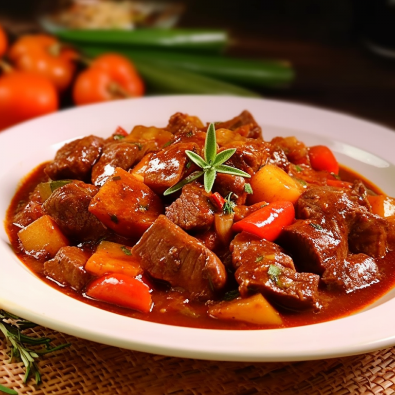

Beef Caldereta

Description
Beef Caldereta is a flavorful and savory Filipino stew made with tender
beef, potatoes, carrots, bell peppers, and olives simmered in a
tomato-based sauce.
Ingredients
Beef Chuck
Vegetable Oil
Onions
Garlic Cloves
Bell Peppers all kinds
Potatoes
Carrots
Tomato Sauce
Beef Broth
Tomato Paste
Olives
Steps
- Beef Caldereta is a flavorful and savory Filipino stew made with
tender beef, potatoes, carrots, bell peppers, and olives simmered
in a tomato-based sauce.
- Add beef and cook until browned on all sides, about 5-10 minutes.
- Add tomato sauce, beef broth, and tomato paste. Give it a good stir
and bring to a boil.
- Lower the heat, cover the pot, and let it simmer for 1 and a half
to 2 hours or until the beef is tender.
- Add potatoes, carrots, bell peppers, olives, raisins, sugar, salt,
and pepper. Mix well and continue to simmer until vegetables are
cooked, about 10-15 minutes.
- Serve hot with steamed rice.